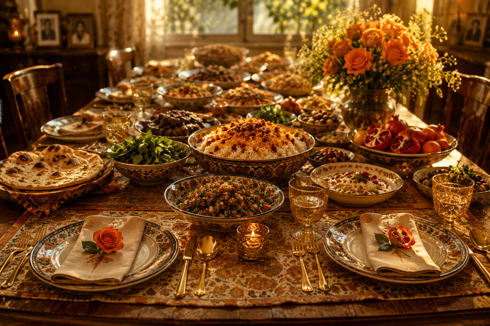
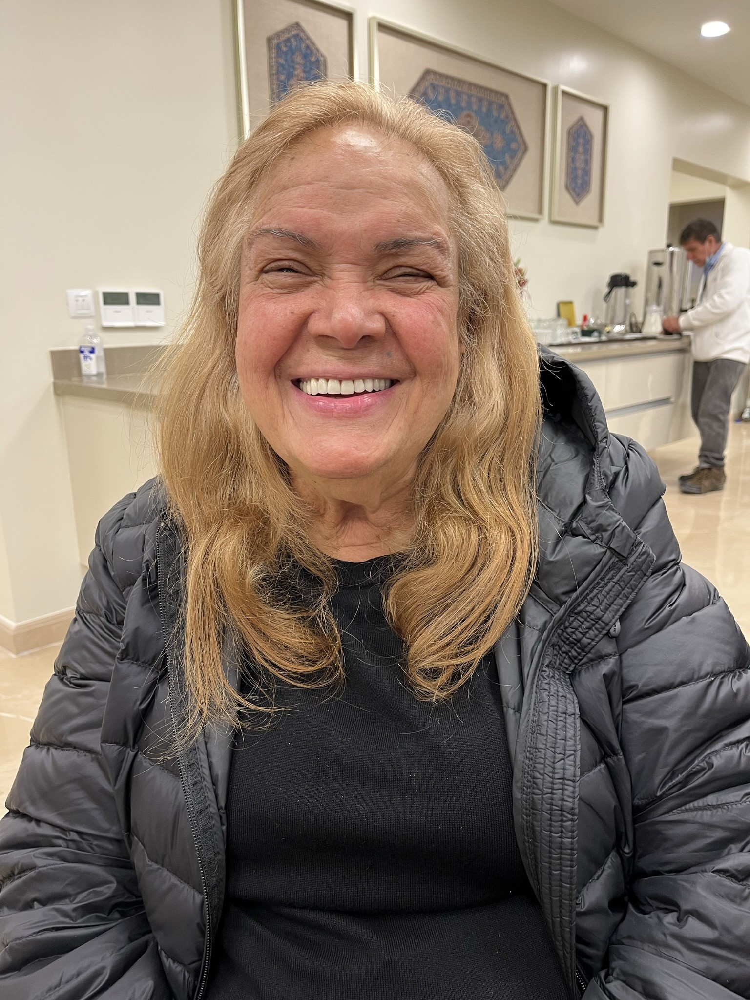

The Maryam Mottaghi Foundation
In Memory • In Service • In Light
Maryam Mottaghi’s life did not end with the people closest to her. Her love moved outward — through family, friends, neighbors, students, coworkers, nurses, strangers, and generations of people who carried something of her forward.
Some people are loved in this world.
Very few become a force through which love continuously flows outward to everyone around them.

Maryam was not known by the world, but she was known by the people whose lives she quietly transformed. She did not speak about kindness. She lived it. She did not wait to be asked. She simply gave.
Her love was not partial, performative, or conditional. It was complete. It was practical. It fed people, protected people, comforted people, prayed for people, and made them feel safe.
One day, a neighbor’s apartment caught fire. Inside were a three-year-old little girl and her grandmother, who had dementia. Maryam did not stop to think. She did not wait for help. She went into the burning home, carried the child out, and then went back in for the grandmother.
But what defined her was not only that moment of courage. Afterward, she brought them into her own home each day, cared for the grandmother gently, and loved the little girl as if she were her own.
More than thirty years later, that little girl found Maryam again. She said she had built her home, her colors, and even the smallest details around Maryam’s memory. There was a hint of orange in everything she owned because Maryam had filled her home with orange, warmth, color, and life.

Maryam’s hospitality was never small. When Marvin and his new bride came over for what was meant to be a simple pā-goshā dinner, they looked at the table and panicked because they thought dozens of guests must be coming.
But the meal was only for them.
Maryam had cooked enough food for what looked like one hundred people, just in case someone else came by. Whether for two people or two hundred, she loved with the same fullness.
Maryam prayed constantly, but what made her prayers extraordinary was who she prayed for. She prayed for others — for their healing, protection, success, comfort, and peace.
For people in need, she would recite hundreds and hundreds of prayers, often spending entire days praying for someone else. Through her prayers, kindness, and love, so many people were uplifted, protected, comforted, and blessed.
Her faith was not separate from her life. It was present in every meal she prepared, every person she comforted, every sacrifice she made, and every soul she embraced.
During the teenage years, it became clear that many friends were not only drawn to Maryam’s children — they were drawn to Maryam herself.
One night, a friend staying over mentioned craving ice cream. Maryam immediately grabbed her bag and keys and said, “Let’s go,” insisting they choose their favorite flavors. When they returned home, the friend hugged Maryam in the kitchen and later explained that her own mother would never have shown such kindness.
Maryam’s small acts of care often revealed what others had been missing their entire lives.
At Costco, Maryam once noticed a woman and her five children sharing a single slice of pizza and a hot dog. Without announcement or attention, she bought them an entire pizza.
For Maryam, it was simply another day of noticing someone in need. For the woman, it was profound. She later found Maryam, embraced her in tears, and thanked her for a kindness Maryam had offered quietly and without expectation.
That was how Maryam moved through the world: seeing need, responding with dignity, and leaving behind a ripple that continued long after the moment passed.

Maryam had one of the warmest smiles God ever created. When people were near her, they felt safe. They felt seen. They felt loved.
She survived revolution, religious persecution, immigration, hardship, endless work, illness, and pain — and through all of it, she never became bitter. She remained gentle. She kept giving. She kept loving.

In the Bahá’í Faith, light symbolizes spiritual illumination, guidance, love, and the eternal soul. For Maryam, light was not only a symbol. It was how she lived.
She spent her life bringing light to others. She served without expecting anything in return. She noticed people gently. She loved deeply. She gave freely.
And because souls like hers do not disappear, her love continues illuminating the lives of those she touched.
If you did not have the chance to know her, this archive exists so you can understand why being loved by Maryam felt like understanding heaven while still on earth.
If Maryam touched your life, your family, your childhood, your faith, your education, your healing, or your sense of being loved, the Foundation welcomes your memory.
These stories will become part of a living archive honoring the ways one woman’s love moved through the world.
Share Your Memory